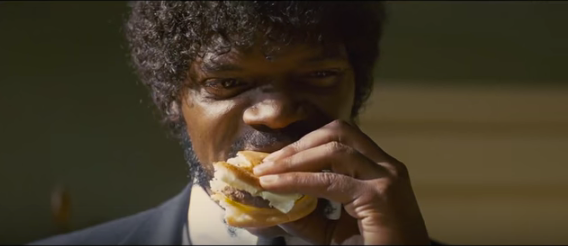

The Big Kahuna Burger

Hamburgers! The cornerstone of any nutritious breakfast.
Ingredients
- 1 red onion, sliced into rings
- 2 tbsp butter, divided
- 3 thin pineapple slices
- 1 tbsp vegetable oil
- 4 ounces ground beef, divided into two balls
- 2 slices Monterey jack cheese
- King's Hawaiian roll, toasted with butter
- 1/2 tbsp ketchup
- 1/2 tbsp teriyaki sauce
Steps
- In a saute pan, heat 1 tbsp butter until foaming, and add red
onion. Cook slowly over low heat, tossing constantly, until soft and caramelized- about 30 minutes. Set aside.
- Wipe out sauté pan, and heat remaining tablespoon of butter over medium heat until sizzling. Add pineapple slices, and sauté until lightly
charred on both sides.
- In a large cast iron skillet, heat vegetable oil over high heat, until smoking. Place beef balls several inches apart in skillet
and smash down using a large, flat spatula. Use a rolling pin or the handle of another spatula to press the burgers firmly down,
until they are thin and craggly. Cook for approximately 60 seconds,
until the bottom is charred and crispy.
Flip, and immediately top with cheese.
Remove from heat, but leave burgers in the pan while you
assemble, so the cheese melts completely.
Dress bun with ketchup and teriyaki sauce, top with burgers,
then caramelized onions and pineapple.